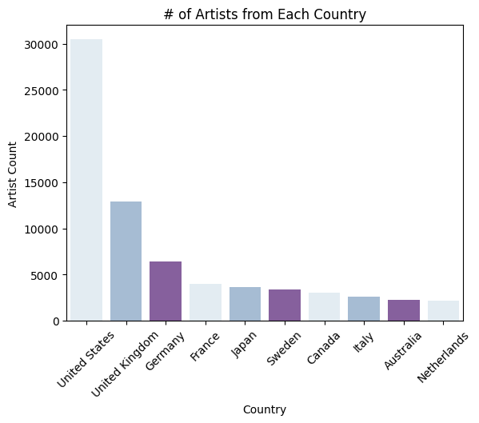
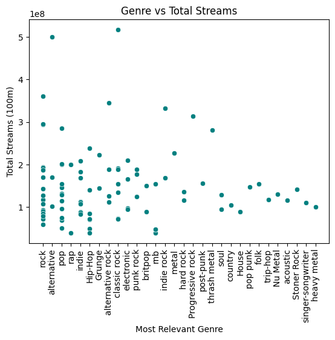
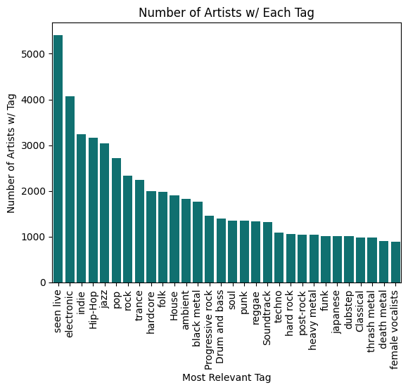
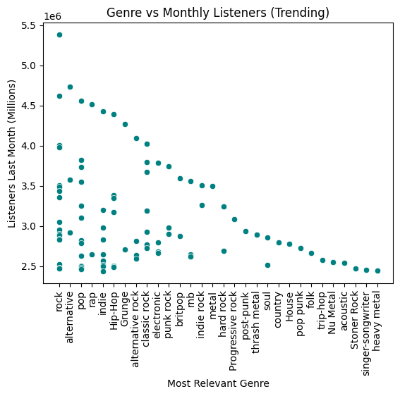

4.2m Rows, 9 Coloumns
Tags_MB: All artist tags on MusicBrainz
scrobbles_lastfm: Number of scrobbles on last.fm

From this graph, we can see that the United States, United Kingdom, and Germany produce the largest number of popular artists.

From this graph, we can see that Rock, Alternative, Pop, and Rap are the most streamed genres.

From this graph, we can see that 'seen live' (which is mostly irrelevant), Electronic, Indie, Hip-hop, and Jazz are the tags most common for artists.

From this graph, we can see that the most trending genres are (also) Rock, Alternative, Pop, and Rap. Therefore, the most popular genres maintain relative consistency.